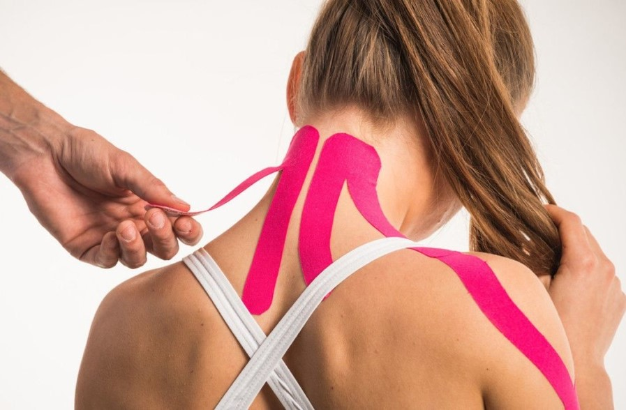

Кинезиотейпирование

Кинезиотейпирование — современный эффективный метод, используемый во многих методиках реабилитации: физиотерапии, медицинском массаже, ЛФК, а также в косметологии.
Метод помогает лечить травмы, воспаления, мышечные растяжения, восстанавливает крово- и лимфоток в пораженных органах, устраняет гематомы. Это способ фиксации суставов и мышц лейкопластырем или специальными лентами.
Что такое кинезиотейпы?
Это специальные хлопковые эластичные ленты на клейкой основе, похожие на обычный лейкопластырь, только более подверженые растяжению и сжатию. Хлопковая основа тейпов позволяет коже дышать, а самим тейпам быстро высыхать после принятия пациентом душа или заплыва в бассейне.
Механизмы воздействия кинезиотейпов
Способность при помощи тейпирования снижать нагрузку на мышцы и соединительно-тканные элементы опорно-двигательной системы связана с тем, что ленты фиксируют кожу. Кожа посредством фасций связана с подлежащими мышцами. Таким образом, зафиксировав кожу, мы опосредованно фиксируем и мышцу, не позволяя ей производить растяжения и сжатия свыше определенной амплитуды. Зафиксированная кожа слегка приподнимает фасцию, облегчая кровоток и лимфоотток.
За счёт сокращения и растяжения ткани тейпа, попеременного натяжения и ослабления натяжения кожи при движении создается эффект микромассажа, который активизирует обмен веществ в интенсивно работающих мышцах. Эффект микромассажа тем эффективнее, чем активнее человек двигается. Фиксация суставов тейпами позволяет ограничить подвижность в поврежденном суставе таким образом, чтобы создать оптимальные условия для выздоровления без полного обездвиживания.
Эффект кинезиотейпирования
- способствует улучшению лимфотока,
- улучшает микроциркуляцию крови,
- оказывает эффект лифтинга,
- снимает мышечное напряжение, уменьшает боль,
- помогает бороться с воспалением и травмами,
- восстанавливает функциональную активность мышц.
Мягкая стабилизация сустава и облегчение движения конечности в суставе создает оптимальные условия для выздоровления.
Противопоказания к тейпированию
- область острого гнойно-воспалительного очага инфекции кожи,
- область флеботромбоза,
- открытые раны и трофические язвы,
- индивидуальная непереносимость
Показания к применению методики тейпирования
- Спортивная медицина (профилактика спортивных травм, посттравматические болевые синдромы суставов верхних и нижних конечностей, ушибы мягких тканей, растяжение связок суставов верхних и нижних конечностей)
- медицинская реабилитация
- травматология и ортопедия (сколиоз, нарушение осанки, плоскостопие, последствия травм и заболеваний),
- неврология (остеохондроз, мышечно-фасциальные болевые синдромы, ДЦП, ОНМК, парезы и плегии различного генеза),
- акушерство и гинекология (для устранения симптомов альгоминореи, укрепления мышц передней брюшной стенки и сохранения формы молочной железы);
- рубцовые изменения различного происхождения и возраста
- эстетическая медицина
Имеются противопоказания, необходима консультация специалиста.
горячая линия
+7 (342) 214-46-94
пн-пт: 8:00 - 22:00
сб: 9:00 - 21:00
вс: 9:00 - 18:00
Последний впуск за 1,5 часа до закрытия.